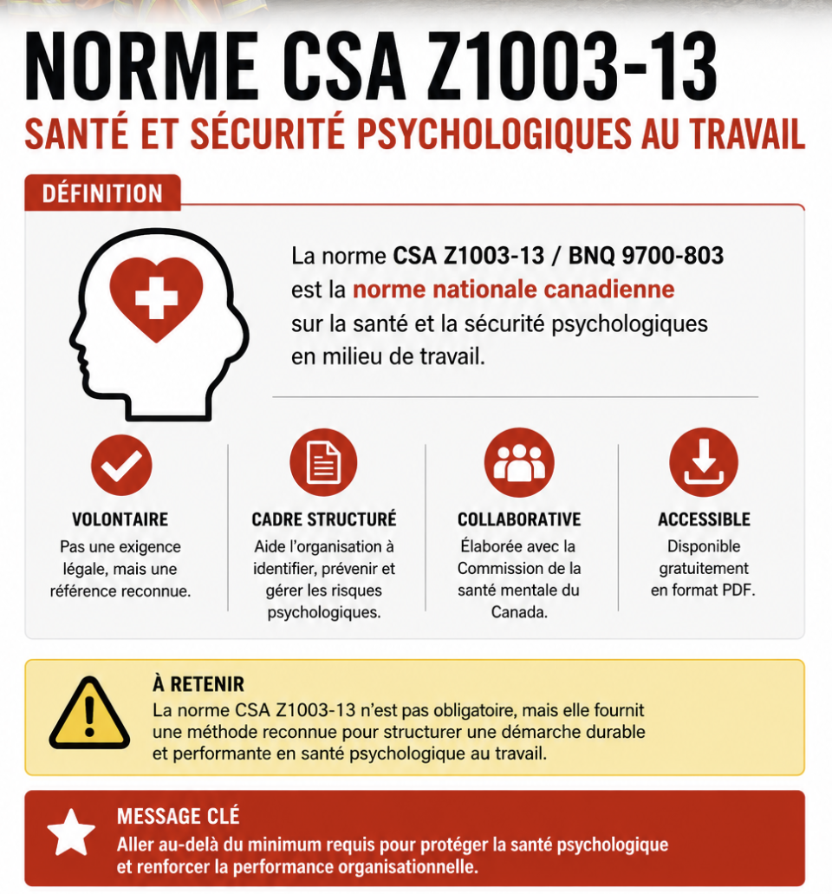
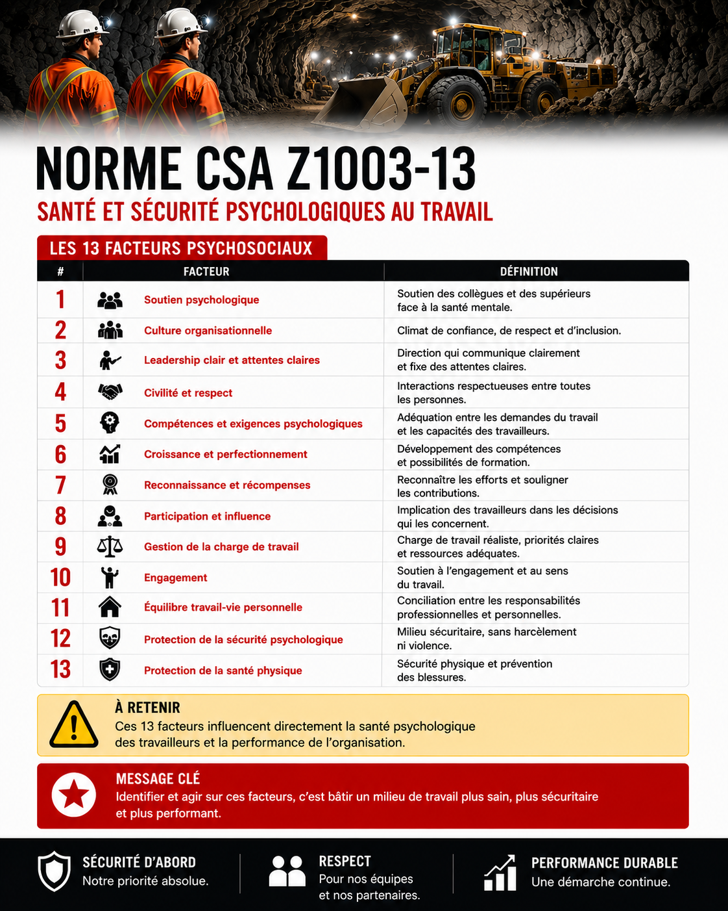
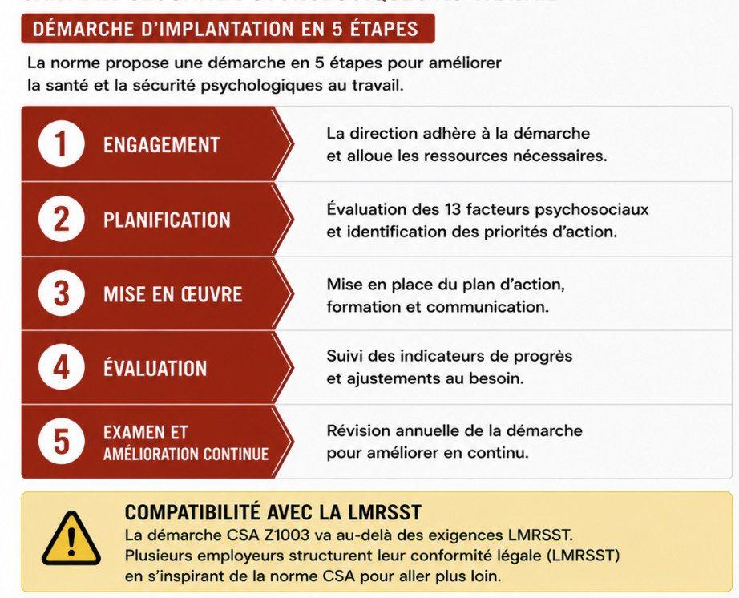

Norme CSA Z1003-13
Table des matières
{kind=link}

Toucher l'image pour l'agrandirL'essentiel : La norme CSA Z1003-13 est la norme nationale canadienne sur la santé et la sécurité psychologiques en milieu de travail. Elle est volontaire (pas obligatoire), mais sert de référence reconnue pour structurer une démarche organisationnelle. Particulièrement utile en complément des obligations légales (LMRSST) pour aller plus loin que le minimum requis.
Présentation
CSA Z1003-13 : norme nationale canadienne publiée en 2013 par la CSA (Association canadienne de normalisation) et le BNQ (Bureau de normalisation du Québec).
Caractéristiques
- Volontaire (pas une exigence légale)
- Disponible gratuitement en PDF
- Élaborée en collaboration avec la Commission de la santé mentale du Canada
- Première norme nationale sur le sujet au monde
Objectif : fournir un cadre structuré pour qu'une organisation puisse identifier, prévenir et gérer les risques pour la santé psychologique de ses travailleurs.
Les treize facteurs psychosociaux
{kind=link}

Toucher l'image pour l'agrandirLa norme identifie 13 facteurs psychosociaux déterminants pour la santé psychologique au travail
| # | Facteur | Définition |
|---|---|---|
| 1 | Soutien psychologique | Soutien des collègues et supérieurs face à la santé mentale |
| 2 | Culture organisationnelle | Climat de confiance, respect, inclusion |
| 3 | Leadership clair et attentes claires | Direction qui communique clairement |
| 4 | Civilité et respect | Interactions respectueuses |
| 5 | Compétences et exigences psychologiques | Adéquation entre demandes et capacités |
| 6 | Croissance et perfectionnement | Développement, formation |
| 7 | Reconnaissance et récompenses | Voir Les quatre formes de reconnaissance (Brun et Dugas) |
| 8 | Participation et influence | Implication des travailleurs aux décisions |
| 9 | Gestion de la charge de travail | Charge réaliste et gérable |
| 10 | Engagement | Soutien à l'engagement des travailleurs |
| 11 | Équilibre travail-vie personnelle | Conciliation |
| 12 | Protection de la sécurité psychologique | Politique anti-harcèlement, anti-violence |
| 13 | Protection de la santé physique | Sécurité physique au travail |
| Pour chaque facteur, la norme propose des questions diagnostiques, des indicateurs et des actions recommandées. |
Démarche d'implantation
{kind=link}

Toucher l'image pour l'agrandirDocuments et outils
| Document | Type | Source |
|---|---|---|
| Norme CSA-Z1003-13.pdf | Norme | csagroup.org |
| Stratégie en milieu de travail sur la santé mentale, MHCC | Site web | strategiesdesantementale.com |
| Guides d'implantation MHCC | mentalhealthcommission.ca | |
| Outils de diagnostic des 13 facteurs | MHCC | |
| Études de cas d'organisations canadiennes | MHCC |
Voir le centre de ressources : 📁 Documents et outils.
Pour aller plus loin
Références
- CSA-Z1003
- Commission de la santé mentale du Canada. Strategies de santé mentale en milieu de travail.
Articles wiki connexes